真实环境音效 Atmospheric
共 492 个条目 · atmospheric
版本: 7.0.1 · 来源: atmospheric-1.21.1-7.0.1.jar
Adds two unique biome types with several variants.
Also introduces several new types of blocks, foliage, and plants!
There will continue to be more biomes over time!
MC百科中文名: 真实环境音效
MC百科页面: https://www.mcmod.cn/class/1198.html（真实环境音效 (MAtmos)）
MC百科检索: site:mcmod.cn Atmospheric
官方介绍 （Modrinth · 中文版由 GLM AI 翻译，仅供参考）
📖 关于：
Atmospheric 带来了一系列别具一格的生物群系。目前已包含多组生物群系：雨林（Rainforests）、沙丘（Dunes）、白杨疏林草原（Aspen Parklands）、灌木地（Scrublands）、四照花丛林（Kousa Jungles）等等！这些群系中遍布新的奖励、植物、食物和建筑方块，其中许多甚至还有结构和变种！
由 GLM AI 翻译，仅供参考
查看英文原文（Modrinth）
资料来源：Atmospheric
物品与方块
atmospheric:agave · 方块
 芦荟捆
芦荟捆atmospheric:aloe_bundle · 方块
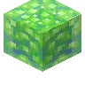
芦荟凝胶块atmospheric:aloe_gel_block · 方块
 芦荟凝胶瓶
芦荟凝胶瓶atmospheric:aloe_gel_bottle · 物品
 芦荟仁
芦荟仁atmospheric:aloe_kernels · 物品
 芦荟叶
芦荟叶atmospheric:aloe_leaves · 物品芦荟
atmospheric:aloe_vera · 方块
 Smithing Template
Smithing Templateatmospheric:apostle_armor_trim_smithing_template · 物品
 Arid Glass
Arid Glassatmospheric:arid_glass · 方块
 Arid Glass Pane
Arid Glass Paneatmospheric:arid_glass_pane · 方块
 干燥沙子
干燥沙子atmospheric:arid_sand · 方块
 干燥砂岩
干燥砂岩atmospheric:arid_sandstone · 方块?干燥砂岩砖台阶
atmospheric:arid_sandstone_brick_slab · 方块?干燥砂岩砖楼梯
atmospheric:arid_sandstone_brick_stairs · 方块?干燥砂岩砖竖直台阶
atmospheric:arid_sandstone_brick_vertical_slab · 方块?干燥砂岩砖墙
atmospheric:arid_sandstone_brick_wall · 方块?干燥砂岩砖
atmospheric:arid_sandstone_bricks · 方块
干燥砂岩台阶atmospheric:arid_sandstone_slab · 方块
干燥砂岩楼梯atmospheric:arid_sandstone_stairs · 方块?干燥砂岩竖直台阶
atmospheric:arid_sandstone_vertical_slab · 方块
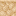
干燥砂岩墙atmospheric:arid_sandstone_wall · 方块旱地苗
atmospheric:arid_sprouts · 方块
 白杨木蜂箱
白杨木蜂箱atmospheric:aspen_beehive · 方块
 白杨木直纹板
白杨木直纹板atmospheric:aspen_boards · 方块
 白杨木船
白杨木船atmospheric:aspen_boat · 物品
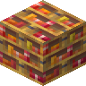
白杨木书架atmospheric:aspen_bookshelf · 方块
 白杨木按钮
白杨木按钮atmospheric:aspen_button · 方块
 白杨木箱子
白杨木箱子atmospheric:aspen_chest · 方块
 白杨木运输船
白杨木运输船atmospheric:aspen_chest_boat · 物品
 白杨木门
白杨木门atmospheric:aspen_door · 方块
 白杨木栅栏
白杨木栅栏atmospheric:aspen_fence · 方块
 白杨木栅栏门
白杨木栅栏门atmospheric:aspen_fence_gate · 方块白杨木动力船
atmospheric:aspen_furnace_boat · 物品
 悬挂式白杨木告示牌
悬挂式白杨木告示牌atmospheric:aspen_hanging_sign · 方块?白杨树篱
atmospheric:aspen_hedge · 方块
 白杨木梯子
白杨木梯子atmospheric:aspen_ladder · 方块?白杨树叶地毯
atmospheric:aspen_leaf_carpet · 方块
 白杨树叶堆
白杨树叶堆atmospheric:aspen_leaf_pile · 方块
 白杨树叶
白杨树叶atmospheric:aspen_leaves · 方块
 白杨原木
白杨原木atmospheric:aspen_log · 方块
 白杨木板
白杨木板atmospheric:aspen_planks · 方块?白杨木杆
atmospheric:aspen_post · 方块
 白杨木压力板
白杨木压力板atmospheric:aspen_pressure_plate · 方块
 白杨树苗
白杨树苗atmospheric:aspen_sapling · 方块
 白杨木告示牌
白杨木告示牌atmospheric:aspen_sign · 方块
 白杨木台阶
白杨木台阶atmospheric:aspen_slab · 方块
 白杨木楼梯
白杨木楼梯atmospheric:aspen_stairs · 方块
 白杨木活板门
白杨木活板门atmospheric:aspen_trapdoor · 方块?白杨木竖直台阶
atmospheric:aspen_vertical_slab · 方块墙上的悬挂式白杨木告示牌
atmospheric:aspen_wall_hanging_sign · 方块
墙上的白杨木告示牌atmospheric:aspen_wall_sign · 方块
白杨木atmospheric:aspen_wood · 方块
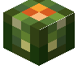
桶形仙人掌atmospheric:barrel_cactus · 方块
 桶形仙人掌块
桶形仙人掌块atmospheric:barrel_cactus_batch · 方块
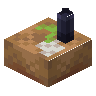
Yucca Gateau with Black Candleatmospheric:black_candle_yucca_gateau · 方块
 血橙
血橙atmospheric:blood_orange · 方块
 箱装血橙
箱装血橙atmospheric:blood_orange_crate · 方块
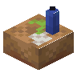
Yucca Gateau with Blue Candleatmospheric:blue_candle_yucca_gateau · 方块
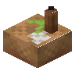
Yucca Gateau with Brown Candleatmospheric:brown_candle_yucca_gateau · 方块
 糖渍橙子片
糖渍橙子片atmospheric:candied_orange_slices · 物品
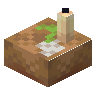
Yucca Gateau with Candleatmospheric:candle_yucca_gateau · 方块
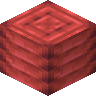
胭脂块atmospheric:carmine_block · 方块
 胭脂外壳
胭脂外壳atmospheric:carmine_husk · 物品
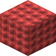
胭脂铺路石atmospheric:carmine_pavement · 方块
 胭脂铺路石台阶
胭脂铺路石台阶atmospheric:carmine_pavement_slab · 方块
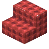
胭脂铺路石楼梯atmospheric:carmine_pavement_stairs · 方块?胭脂铺路石竖直台阶
atmospheric:carmine_pavement_vertical_slab · 方块
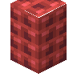
胭脂铺路石墙atmospheric:carmine_pavement_wall · 方块
 胭脂砖瓦台阶
胭脂砖瓦台阶atmospheric:carmine_shingle_slab · 方块
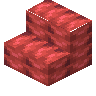
胭脂砖瓦楼梯atmospheric:carmine_shingle_stairs · 方块?胭脂砖瓦竖直台阶
atmospheric:carmine_shingle_vertical_slab · 方块
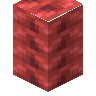
胭脂砖瓦墙atmospheric:carmine_shingle_wall · 方块
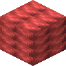
胭脂砖瓦atmospheric:carmine_shingles · 方块
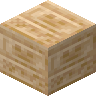
雕纹干燥砂岩atmospheric:chiseled_arid_sandstone · 方块
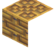
白杨木雕纹书架atmospheric:chiseled_aspen_bookshelf · 方块
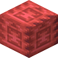
雕纹胭脂砖瓦atmospheric:chiseled_carmine_shingles · 方块
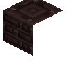
阴郁木雕纹书架atmospheric:chiseled_grimwood_bookshelf · 方块
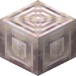
雕纹象牙白石灰华atmospheric:chiseled_ivory_travertine · 方块
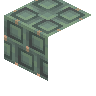
梾木雕纹书架atmospheric:chiseled_kousa_bookshelf · 方块
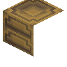
月桂木雕纹书架atmospheric:chiseled_laurel_bookshelf · 方块
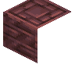
酸枝木雕纹书架atmospheric:chiseled_morado_bookshelf · 方块
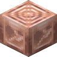
雕纹桃红石灰华atmospheric:chiseled_peach_travertine · 方块
 雕纹柿子橙石灰华
雕纹柿子橙石灰华atmospheric:chiseled_persimmon_travertine · 方块
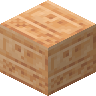
雕纹干燥红砂岩atmospheric:chiseled_red_arid_sandstone · 方块
 花梨木雕纹书架
花梨木雕纹书架atmospheric:chiseled_rosewood_bookshelf · 方块
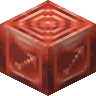
雕纹藏红石灰华atmospheric:chiseled_saffron_travertine · 方块
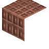
丝兰木雕纹书架atmospheric:chiseled_yucca_bookshelf · 方块
 旗帜图案
旗帜图案atmospheric:cochineal_banner_pattern · 物品
 胭脂虫刷怪蛋
胭脂虫刷怪蛋atmospheric:cochineal_spawn_egg · 物品
 地衣结壳土
地衣结壳土atmospheric:crustose · 方块
 地衣结壳原木
地衣结壳原木atmospheric:crustose_log · 方块
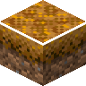
地衣结壳土径atmospheric:crustose_path · 方块
 地衣结壳木
地衣结壳木atmospheric:crustose_wood · 方块
 醋栗
醋栗atmospheric:currant · 物品
 箱装醋栗
箱装醋栗atmospheric:currant_crate · 方块?醋栗树篱
atmospheric:currant_hedge · 方块?醋栗树叶地毯
atmospheric:currant_leaf_carpet · 方块
 醋栗树叶堆
醋栗树叶堆atmospheric:currant_leaf_pile · 方块
 醋栗树叶
醋栗树叶atmospheric:currant_leaves · 方块
 醋栗杯状松糕
醋栗杯状松糕atmospheric:currant_muffin · 物品
 醋栗幼苗
醋栗幼苗atmospheric:currant_seedling · 方块
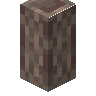
醋栗枝atmospheric:currant_stalk · 方块
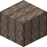
醋栗梗捆atmospheric:currant_stalk_bundle · 方块
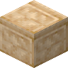
切制干燥砂岩atmospheric:cut_arid_sandstone · 方块
 切制干燥砂岩台阶
切制干燥砂岩台阶atmospheric:cut_arid_sandstone_slab · 方块?切制干燥砂岩竖直台阶
atmospheric:cut_arid_sandstone_vertical_slab · 方块
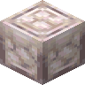
切制象牙白石灰华atmospheric:cut_ivory_travertine · 方块
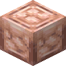
切制桃红石灰华atmospheric:cut_peach_travertine · 方块
 切制柿子橙石灰华
切制柿子橙石灰华atmospheric:cut_persimmon_travertine · 方块
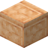
切制干燥红砂岩atmospheric:cut_red_arid_sandstone · 方块
 切制干燥红砂岩台阶
切制干燥红砂岩台阶atmospheric:cut_red_arid_sandstone_slab · 方块?切制干燥红砂岩竖直台阶
atmospheric:cut_red_arid_sandstone_vertical_slab · 方块
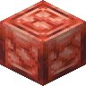
切制藏红石灰华atmospheric:cut_saffron_travertine · 方块
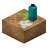
Yucca Gateau with Cyan Candleatmospheric:cyan_candle_yucca_gateau · 方块
 粗玄岩
粗玄岩atmospheric:dolerite · 方块
 粗玄岩台阶
粗玄岩台阶atmospheric:dolerite_slab · 方块
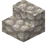
粗玄岩楼梯atmospheric:dolerite_stairs · 方块?粗玄岩竖直台阶
atmospheric:dolerite_vertical_slab · 方块
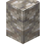
粗玄岩墙atmospheric:dolerite_wall · 方块
 火龙果
火龙果atmospheric:dragon_fruit · 物品
 箱装火龙果
箱装火龙果atmospheric:dragon_fruit_crate · 方块
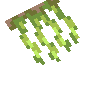
量天尺atmospheric:dragon_roots · 方块
 Smithing Template
Smithing Templateatmospheric:druid_armor_trim_smithing_template · 物品?干燥月桂树篱
atmospheric:dry_laurel_hedge · 方块?干燥月桂树叶地毯
atmospheric:dry_laurel_leaf_carpet · 方块
 干燥月桂树叶堆
干燥月桂树叶堆atmospheric:dry_laurel_leaf_pile · 方块
 干燥月桂树叶
干燥月桂树叶atmospheric:dry_laurel_leaves · 方块
 干燥月桂树苗
干燥月桂树苗atmospheric:dry_laurel_sapling · 方块末影龙果
atmospheric:ender_dragon_fruit · 物品
 火棘
火棘atmospheric:firethorn · 方块?开花酸枝树篱
atmospheric:flowering_morado_hedge · 方块?开花酸枝树叶地毯
atmospheric:flowering_morado_leaf_carpet · 方块
 开花酸枝树叶堆
开花酸枝树叶堆atmospheric:flowering_morado_leaf_pile · 方块
 开花酸枝树叶
开花酸枝树叶atmospheric:flowering_morado_leaves · 方块
 连翘
连翘atmospheric:forsythia · 方块
 吉莉草
吉莉草atmospheric:gilia · 方块
 金火龙果
金火龙果atmospheric:golden_dragon_fruit · 物品
 箱装金火龙果
箱装金火龙果atmospheric:golden_dragon_fruit_crate · 方块金色苗
atmospheric:golden_growths · 方块
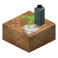
Yucca Gateau with Gray Candleatmospheric:gray_candle_yucca_gateau · 方块?绿色白杨树篱
atmospheric:green_aspen_hedge · 方块?绿色白杨树叶地毯
atmospheric:green_aspen_leaf_carpet · 方块
 绿色白杨树叶堆
绿色白杨树叶堆atmospheric:green_aspen_leaf_pile · 方块
 绿色白杨树叶
绿色白杨树叶atmospheric:green_aspen_leaves · 方块
 绿色白杨树苗
绿色白杨树苗atmospheric:green_aspen_sapling · 方块
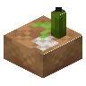
Yucca Gateau with Green Candleatmospheric:green_candle_yucca_gateau · 方块
 阴郁蛛网
阴郁蛛网atmospheric:grimweb · 方块
 阴郁木
阴郁木atmospheric:grimwood · 方块
 阴郁木蜂箱
阴郁木蜂箱atmospheric:grimwood_beehive · 方块
 阴郁木直纹板
阴郁木直纹板atmospheric:grimwood_boards · 方块
 阴郁木船
阴郁木船atmospheric:grimwood_boat · 物品
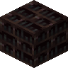
阴郁木书架atmospheric:grimwood_bookshelf · 方块
 阴郁木按钮
阴郁木按钮atmospheric:grimwood_button · 方块阴郁木箱子
atmospheric:grimwood_chest · 方块
 阴郁木运输船
阴郁木运输船atmospheric:grimwood_chest_boat · 物品
 阴郁木门
阴郁木门atmospheric:grimwood_door · 方块
 阴郁木栅栏
阴郁木栅栏atmospheric:grimwood_fence · 方块
 阴郁木栅栏门
阴郁木栅栏门atmospheric:grimwood_fence_gate · 方块
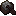
阴郁木动力船atmospheric:grimwood_furnace_boat · 物品
 悬挂式阴郁木告示牌
悬挂式阴郁木告示牌atmospheric:grimwood_hanging_sign · 方块?阴郁木树篱
atmospheric:grimwood_hedge · 方块
 阴郁木梯子
阴郁木梯子atmospheric:grimwood_ladder · 方块?阴郁木树叶地毯
atmospheric:grimwood_leaf_carpet · 方块
 阴郁木树叶堆
阴郁木树叶堆atmospheric:grimwood_leaf_pile · 方块
 阴郁木树叶
阴郁木树叶atmospheric:grimwood_leaves · 方块
阴郁木原木atmospheric:grimwood_log · 方块
 阴郁木木板
阴郁木木板atmospheric:grimwood_planks · 方块?阴郁木杆
atmospheric:grimwood_post · 方块
 阴郁木压力板
阴郁木压力板atmospheric:grimwood_pressure_plate · 方块
 阴郁木树苗
阴郁木树苗atmospheric:grimwood_sapling · 方块
 阴郁木告示牌
阴郁木告示牌atmospheric:grimwood_sign · 方块
 阴郁木台阶
阴郁木台阶atmospheric:grimwood_slab · 方块
 阴郁木楼梯
阴郁木楼梯atmospheric:grimwood_stairs · 方块
 阴郁木活板门
阴郁木活板门atmospheric:grimwood_trapdoor · 方块?阴郁木竖直台阶
atmospheric:grimwood_vertical_slab · 方块墙上的悬挂式阴郁木告示牌
atmospheric:grimwood_wall_hanging_sign · 方块墙上的阴郁木告示牌
atmospheric:grimwood_wall_sign · 方块
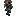
挂枝醋栗atmospheric:hanging_currant · 方块
 炽热猴毛风车子
炽热猴毛风车子atmospheric:hot_monkey_brush · 方块
 象牙白石灰华
象牙白石灰华atmospheric:ivory_travertine · 方块
 象牙白石灰华台阶
象牙白石灰华台阶atmospheric:ivory_travertine_slab · 方块象牙白石灰华楼梯
atmospheric:ivory_travertine_stairs · 方块?象牙白石灰华竖直台阶
atmospheric:ivory_travertine_vertical_slab · 方块象牙白石灰华墙
atmospheric:ivory_travertine_wall · 方块
 梾木蜂箱
梾木蜂箱atmospheric:kousa_beehive · 方块
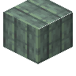
梾木直纹板atmospheric:kousa_boards · 方块
 梾木船
梾木船atmospheric:kousa_boat · 物品
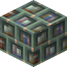
梾木书架atmospheric:kousa_bookshelf · 方块
 梾木按钮
梾木按钮atmospheric:kousa_button · 方块梾木箱子
atmospheric:kousa_chest · 方块
 梾木运输船
梾木运输船atmospheric:kousa_chest_boat · 物品
 梾木门
梾木门atmospheric:kousa_door · 方块
 梾木栅栏
梾木栅栏atmospheric:kousa_fence · 方块
 梾木栅栏门
梾木栅栏门atmospheric:kousa_fence_gate · 方块
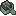
梾木动力船atmospheric:kousa_furnace_boat · 物品
 悬挂式梾木告示牌
悬挂式梾木告示牌atmospheric:kousa_hanging_sign · 方块?梾树树篱
atmospheric:kousa_hedge · 方块
 梾木梯子
梾木梯子atmospheric:kousa_ladder · 方块?梾树树叶地毯
atmospheric:kousa_leaf_carpet · 方块
 梾树树叶堆
梾树树叶堆atmospheric:kousa_leaf_pile · 方块
 梾树树叶
梾树树叶atmospheric:kousa_leaves · 方块
 梾木原木
梾木原木atmospheric:kousa_log · 方块
 梾木木板
梾木木板atmospheric:kousa_planks · 方块?梾木杆
atmospheric:kousa_post · 方块
 梾木压力板
梾木压力板atmospheric:kousa_pressure_plate · 方块
 梾树树苗
梾树树苗atmospheric:kousa_sapling · 方块
 梾木告示牌
梾木告示牌atmospheric:kousa_sign · 方块
 梾木台阶
梾木台阶atmospheric:kousa_slab · 方块
 梾木楼梯
梾木楼梯atmospheric:kousa_stairs · 方块
 梾木活板门
梾木活板门atmospheric:kousa_trapdoor · 方块?梾木竖直台阶
atmospheric:kousa_vertical_slab · 方块墙上的悬挂式梾木告示牌
atmospheric:kousa_wall_hanging_sign · 方块墙上的梾木告示牌
atmospheric:kousa_wall_sign · 方块
梾木atmospheric:kousa_wood · 方块
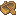
白杨木大型船atmospheric:large_aspen_boat · 物品阴郁木大型船
atmospheric:large_grimwood_boat · 物品梾木大型船
atmospheric:large_kousa_boat · 物品
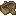
月桂木大型船atmospheric:large_laurel_boat · 物品酸枝木大型船
atmospheric:large_morado_boat · 物品
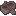
花梨木大型船atmospheric:large_rosewood_boat · 物品丝兰木大型船
atmospheric:large_yucca_boat · 物品
 月桂木蜂箱
月桂木蜂箱atmospheric:laurel_beehive · 方块月桂木直纹板
atmospheric:laurel_boards · 方块
 月桂木船
月桂木船atmospheric:laurel_boat · 物品月桂木书架
atmospheric:laurel_bookshelf · 方块
 月桂木按钮
月桂木按钮atmospheric:laurel_button · 方块月桂木箱子
atmospheric:laurel_chest · 方块
 月桂木运输船
月桂木运输船atmospheric:laurel_chest_boat · 物品
 月桂木门
月桂木门atmospheric:laurel_door · 方块
 月桂木栅栏
月桂木栅栏atmospheric:laurel_fence · 方块
 月桂木栅栏门
月桂木栅栏门atmospheric:laurel_fence_gate · 方块月桂木动力船
atmospheric:laurel_furnace_boat · 物品
 悬挂式月桂木告示牌
悬挂式月桂木告示牌atmospheric:laurel_hanging_sign · 方块?月桂树篱
atmospheric:laurel_hedge · 方块
 月桂木梯子
月桂木梯子atmospheric:laurel_ladder · 方块?月桂树叶地毯
atmospheric:laurel_leaf_carpet · 方块
 月桂树叶堆
月桂树叶堆atmospheric:laurel_leaf_pile · 方块
 月桂树叶
月桂树叶atmospheric:laurel_leaves · 方块
 月桂原木
月桂原木atmospheric:laurel_log · 方块
 月桂木板
月桂木板atmospheric:laurel_planks · 方块?月桂木杆
atmospheric:laurel_post · 方块
 月桂木压力板
月桂木压力板atmospheric:laurel_pressure_plate · 方块
 月桂树苗
月桂树苗atmospheric:laurel_sapling · 方块
 月桂木告示牌
月桂木告示牌atmospheric:laurel_sign · 方块
 月桂木台阶
月桂木台阶atmospheric:laurel_slab · 方块
 月桂木楼梯
月桂木楼梯atmospheric:laurel_stairs · 方块
 月桂木活板门
月桂木活板门atmospheric:laurel_trapdoor · 方块?月桂木竖直台阶
atmospheric:laurel_vertical_slab · 方块墙上的悬挂式月桂木告示牌
atmospheric:laurel_wall_hanging_sign · 方块墙上的月桂木告示牌
atmospheric:laurel_wall_sign · 方块
月桂木atmospheric:laurel_wood · 方块Yucca Gateau with Light Blue Candle
atmospheric:light_blue_candle_yucca_gateau · 方块Yucca Gateau with Light Gray Candle
atmospheric:light_gray_candle_yucca_gateau · 方块Yucca Gateau with Lime Candle
atmospheric:lime_candle_yucca_gateau · 方块Yucca Gateau with Magenta Candle
atmospheric:magenta_candle_yucca_gateau · 方块
 酸枝木蜂箱
酸枝木蜂箱atmospheric:morado_beehive · 方块
 酸枝木直纹板
酸枝木直纹板atmospheric:morado_boards · 方块
 酸枝木船
酸枝木船atmospheric:morado_boat · 物品酸枝木书架
atmospheric:morado_bookshelf · 方块
 酸枝木按钮
酸枝木按钮atmospheric:morado_button · 方块酸枝木箱子
atmospheric:morado_chest · 方块
 酸枝木运输船
酸枝木运输船atmospheric:morado_chest_boat · 物品
 酸枝木门
酸枝木门atmospheric:morado_door · 方块
 酸枝木栅栏
酸枝木栅栏atmospheric:morado_fence · 方块
 酸枝木栅栏门
酸枝木栅栏门atmospheric:morado_fence_gate · 方块酸枝木动力船
atmospheric:morado_furnace_boat · 物品
 悬挂式酸枝木告示牌
悬挂式酸枝木告示牌atmospheric:morado_hanging_sign · 方块?酸枝树篱
atmospheric:morado_hedge · 方块
 酸枝木梯子
酸枝木梯子atmospheric:morado_ladder · 方块?酸枝树叶地毯
atmospheric:morado_leaf_carpet · 方块
 酸枝树叶堆
酸枝树叶堆atmospheric:morado_leaf_pile · 方块
 酸枝树叶
酸枝树叶atmospheric:morado_leaves · 方块
 酸枝原木
酸枝原木atmospheric:morado_log · 方块
 酸枝木板
酸枝木板atmospheric:morado_planks · 方块?酸枝木杆
atmospheric:morado_post · 方块
 酸枝木压力板
酸枝木压力板atmospheric:morado_pressure_plate · 方块
 酸枝树苗
酸枝树苗atmospheric:morado_sapling · 方块
 酸枝木告示牌
酸枝木告示牌atmospheric:morado_sign · 方块
 酸枝木台阶
酸枝木台阶atmospheric:morado_slab · 方块
 酸枝木楼梯
酸枝木楼梯atmospheric:morado_stairs · 方块
 酸枝木活板门
酸枝木活板门atmospheric:morado_trapdoor · 方块?酸枝木竖直台阶
atmospheric:morado_vertical_slab · 方块墙上的悬挂式酸枝木告示牌
atmospheric:morado_wall_hanging_sign · 方块墙上的酸枝木告示牌
atmospheric:morado_wall_sign · 方块
酸枝木atmospheric:morado_wood · 方块
 橙子
橙子atmospheric:orange · 方块Yucca Gateau with Orange Candle
atmospheric:orange_candle_yucca_gateau · 方块
 箱装橙子
箱装橙子atmospheric:orange_crate · 方块
 橙子布丁
橙子布丁atmospheric:orange_pudding · 物品
 橙子冰糕
橙子冰糕atmospheric:orange_sorbet · 物品
 百香果
百香果atmospheric:passion_fruit · 物品
 箱装百香果
箱装百香果atmospheric:passion_fruit_crate · 方块
 百香果冰糕
百香果冰糕atmospheric:passion_fruit_sorbet · 物品
 百香果馅饼
百香果馅饼atmospheric:passion_fruit_tart · 物品百香果藤
atmospheric:passion_vine · 方块
 百香果藤捆
百香果藤捆atmospheric:passion_vine_bundle · 方块百香果藤圈
atmospheric:passion_vine_coil · 物品
 桃红石灰华
桃红石灰华atmospheric:peach_travertine · 方块
 桃红石灰华台阶
桃红石灰华台阶atmospheric:peach_travertine_slab · 方块桃红石灰华楼梯
atmospheric:peach_travertine_stairs · 方块?桃红石灰华竖直台阶
atmospheric:peach_travertine_vertical_slab · 方块桃红石灰华墙
atmospheric:peach_travertine_wall · 方块
 柿子橙石灰华
柿子橙石灰华atmospheric:persimmon_travertine · 方块
 柿子橙石灰华台阶
柿子橙石灰华台阶atmospheric:persimmon_travertine_slab · 方块
柿子橙石灰华楼梯atmospheric:persimmon_travertine_stairs · 方块?柿子橙石灰华竖直台阶
atmospheric:persimmon_travertine_vertical_slab · 方块柿子橙石灰华墙
atmospheric:persimmon_travertine_wall · 方块
 Smithing Template
Smithing Templateatmospheric:petrified_armor_trim_smithing_template · 物品Yucca Gateau with Pink Candle
atmospheric:pink_candle_yucca_gateau · 方块
 磨制粗玄岩
磨制粗玄岩atmospheric:polished_dolerite · 方块
 磨制粗玄岩台阶
磨制粗玄岩台阶atmospheric:polished_dolerite_slab · 方块
 磨制粗玄岩楼梯
磨制粗玄岩楼梯atmospheric:polished_dolerite_stairs · 方块?磨制粗玄岩竖直台阶
atmospheric:polished_dolerite_vertical_slab · 方块
 龙舌兰盆栽
龙舌兰盆栽atmospheric:potted_agave · 方块
芦荟盆栽atmospheric:potted_aloe_vera · 方块
白杨树苗盆栽atmospheric:potted_aspen_sapling · 方块
 桶形仙人掌盆栽
桶形仙人掌盆栽atmospheric:potted_barrel_cactus · 方块
醋栗幼苗盆栽atmospheric:potted_currant_seedling · 方块
干燥月桂树苗盆栽atmospheric:potted_dry_laurel_sapling · 方块
火棘盆栽atmospheric:potted_firethorn · 方块
连翘盆栽atmospheric:potted_forsythia · 方块
吉莉草盆栽atmospheric:potted_gilia · 方块
金色苗盆栽atmospheric:potted_golden_growths · 方块
绿白杨树苗盆栽atmospheric:potted_green_aspen_sapling · 方块
阴郁木树苗盆栽atmospheric:potted_grimwood_sapling · 方块
炽热猴毛风车子盆栽atmospheric:potted_hot_monkey_brush · 方块
梾树树苗盆栽atmospheric:potted_kousa_sapling · 方块
月桂树苗盆栽atmospheric:potted_laurel_sapling · 方块
酸枝树苗盆栽atmospheric:potted_morado_sapling · 方块
花梨木树苗盆栽atmospheric:potted_rosewood_sapling · 方块
滚烫猴毛风车子盆栽atmospheric:potted_scalding_monkey_brush · 方块
积雪的竹子盆栽atmospheric:potted_snowy_bamboo · 方块积雪的桶形仙人掌盆栽
atmospheric:potted_snowy_barrel_cactus · 方块积雪的仙人掌盆栽
atmospheric:potted_snowy_cactus · 方块
暖和猴毛风车子盆栽atmospheric:potted_warm_monkey_brush · 方块
凤眼莲盆栽atmospheric:potted_water_hyacinth · 方块
丝兰花盆栽atmospheric:potted_yucca_flower · 方块
丝兰树苗盆栽atmospheric:potted_yucca_sapling · 方块Yucca Gateau with Purple Candle
atmospheric:purple_candle_yucca_gateau · 方块
 干燥红沙
干燥红沙atmospheric:red_arid_sand · 方块
 干燥红砂岩
干燥红砂岩atmospheric:red_arid_sandstone · 方块?干燥红砂岩砖台阶
atmospheric:red_arid_sandstone_brick_slab · 方块?干燥红砂岩砖楼梯
atmospheric:red_arid_sandstone_brick_stairs · 方块?干燥红砂岩砖竖直台阶
atmospheric:red_arid_sandstone_brick_vertical_slab · 方块?干燥红砂岩砖墙
atmospheric:red_arid_sandstone_brick_wall · 方块?干燥红砂岩砖
atmospheric:red_arid_sandstone_bricks · 方块
干燥红砂岩台阶atmospheric:red_arid_sandstone_slab · 方块
干燥红砂岩楼梯atmospheric:red_arid_sandstone_stairs · 方块?干燥红砂岩竖直台阶
atmospheric:red_arid_sandstone_vertical_slab · 方块干燥红砂岩墙
atmospheric:red_arid_sandstone_wall · 方块Yucca Gateau with Red Candle
atmospheric:red_candle_yucca_gateau · 方块烤丝兰果捆
atmospheric:roasted_yucca_bundle · 方块
 桶装烤丝兰果
桶装烤丝兰果atmospheric:roasted_yucca_cask · 方块烤丝兰果
atmospheric:roasted_yucca_fruit · 物品
 花梨木
花梨木atmospheric:rosewood · 方块
 花梨木蜂箱
花梨木蜂箱atmospheric:rosewood_beehive · 方块
 花梨木直纹板
花梨木直纹板atmospheric:rosewood_boards · 方块
 花梨木船
花梨木船atmospheric:rosewood_boat · 物品
 花梨木书架
花梨木书架atmospheric:rosewood_bookshelf · 方块
 花梨木按钮
花梨木按钮atmospheric:rosewood_button · 方块
 花梨木箱子
花梨木箱子atmospheric:rosewood_chest · 方块
 花梨木运输船
花梨木运输船atmospheric:rosewood_chest_boat · 物品
 花梨木门
花梨木门atmospheric:rosewood_door · 方块
 花梨木栅栏
花梨木栅栏atmospheric:rosewood_fence · 方块
 花梨木栅栏门
花梨木栅栏门atmospheric:rosewood_fence_gate · 方块花梨木动力船
atmospheric:rosewood_furnace_boat · 物品
 悬挂式花梨木告示牌
悬挂式花梨木告示牌atmospheric:rosewood_hanging_sign · 方块?花梨木树篱
atmospheric:rosewood_hedge · 方块
 花梨木梯子
花梨木梯子atmospheric:rosewood_ladder · 方块?花梨木树叶地毯
atmospheric:rosewood_leaf_carpet · 方块
 花梨木树叶堆
花梨木树叶堆atmospheric:rosewood_leaf_pile · 方块
 花梨木树叶
花梨木树叶atmospheric:rosewood_leaves · 方块
花梨木原木atmospheric:rosewood_log · 方块
 花梨木木板
花梨木木板atmospheric:rosewood_planks · 方块?花梨木杆
atmospheric:rosewood_post · 方块
 花梨木压力板
花梨木压力板atmospheric:rosewood_pressure_plate · 方块
 花梨木树苗
花梨木树苗atmospheric:rosewood_sapling · 方块
 花梨木告示牌
花梨木告示牌atmospheric:rosewood_sign · 方块
 花梨木台阶
花梨木台阶atmospheric:rosewood_slab · 方块
 花梨木楼梯
花梨木楼梯atmospheric:rosewood_stairs · 方块
 花梨木活板门
花梨木活板门atmospheric:rosewood_trapdoor · 方块?花梨木竖直台阶
atmospheric:rosewood_vertical_slab · 方块墙上的悬挂式花梨木告示牌
atmospheric:rosewood_wall_hanging_sign · 方块
墙上的花梨木告示牌atmospheric:rosewood_wall_sign · 方块
 藏红石灰华
藏红石灰华atmospheric:saffron_travertine · 方块
 藏红石灰华台阶
藏红石灰华台阶atmospheric:saffron_travertine_slab · 方块藏红石灰华楼梯
atmospheric:saffron_travertine_stairs · 方块?藏红石灰华竖直台阶
atmospheric:saffron_travertine_vertical_slab · 方块藏红石灰华墙
atmospheric:saffron_travertine_wall · 方块
 滚烫猴毛风车子
滚烫猴毛风车子atmospheric:scalding_monkey_brush · 方块
 镰刀纹样陶片
镰刀纹样陶片atmospheric:scythe_pottery_sherd · 物品
atmospheric:shimmering_passion_fruit · 物品
 箱装闪烁的百香果
箱装闪烁的百香果atmospheric:shimmering_passion_fruit_crate · 方块
 平滑干燥砂岩
平滑干燥砂岩atmospheric:smooth_arid_sandstone · 方块
平滑干燥砂岩台阶atmospheric:smooth_arid_sandstone_slab · 方块
平滑干燥砂岩楼梯atmospheric:smooth_arid_sandstone_stairs · 方块?平滑干燥砂岩竖直台阶
atmospheric:smooth_arid_sandstone_vertical_slab · 方块
 平滑干燥红砂岩
平滑干燥红砂岩atmospheric:smooth_red_arid_sandstone · 方块
平滑干燥红砂岩台阶atmospheric:smooth_red_arid_sandstone_slab · 方块
平滑干燥红砂岩楼梯atmospheric:smooth_red_arid_sandstone_stairs · 方块?平滑干燥红砂岩竖直台阶
atmospheric:smooth_red_arid_sandstone_vertical_slab · 方块积雪的竹子
atmospheric:snowy_bamboo · 方块积雪的竹笋
atmospheric:snowy_bamboo_sapling · 方块
 积雪的桶形仙人掌
积雪的桶形仙人掌atmospheric:snowy_barrel_cactus · 方块积雪的仙人掌
atmospheric:snowy_cactus · 方块
 去皮白杨原木
去皮白杨原木atmospheric:stripped_aspen_log · 方块?去皮白杨木杆
atmospheric:stripped_aspen_post · 方块
去皮白杨木atmospheric:stripped_aspen_wood · 方块
 去皮阴郁木
去皮阴郁木atmospheric:stripped_grimwood · 方块
去皮阴郁木原木atmospheric:stripped_grimwood_log · 方块?去皮阴郁木杆
atmospheric:stripped_grimwood_post · 方块
 去皮梾木原木
去皮梾木原木atmospheric:stripped_kousa_log · 方块?去皮梾木杆
atmospheric:stripped_kousa_post · 方块
去皮梾木atmospheric:stripped_kousa_wood · 方块
 去皮月桂原木
去皮月桂原木atmospheric:stripped_laurel_log · 方块?去皮月桂木杆
atmospheric:stripped_laurel_post · 方块
去皮月桂木atmospheric:stripped_laurel_wood · 方块
 去皮酸枝原木
去皮酸枝原木atmospheric:stripped_morado_log · 方块?去皮酸枝木杆
atmospheric:stripped_morado_post · 方块
去皮酸枝木atmospheric:stripped_morado_wood · 方块
 去皮花梨木
去皮花梨木atmospheric:stripped_rosewood · 方块
去皮花梨木原木atmospheric:stripped_rosewood_log · 方块?去皮花梨木杆
atmospheric:stripped_rosewood_post · 方块
 去皮丝兰原木
去皮丝兰原木atmospheric:stripped_yucca_log · 方块?去皮丝兰木杆
atmospheric:stripped_yucca_post · 方块
去皮丝兰木atmospheric:stripped_yucca_wood · 方块
 多肉纹样陶片
多肉纹样陶片atmospheric:succulent_pottery_sherd · 物品
 太阳纹样陶片
太阳纹样陶片atmospheric:sun_pottery_sherd · 物品
 可疑的干燥沙子
可疑的干燥沙子atmospheric:suspicious_arid_sand · 方块
 可疑的干燥红沙
可疑的干燥红沙atmospheric:suspicious_red_arid_sand · 方块高芦荟
atmospheric:tall_aloe_vera · 方块
 高丝兰花
高丝兰花atmospheric:tall_yucca_flower · 方块?Bucket of Tetra
atmospheric:tetra_bucket · 物品
Tetra Spawn Eggatmospheric:tetra_spawn_egg · 物品
白杨木陷阱箱atmospheric:trapped_aspen_chest · 方块阴郁木陷阱箱
atmospheric:trapped_grimwood_chest · 方块梾木陷阱箱
atmospheric:trapped_kousa_chest · 方块月桂木陷阱箱
atmospheric:trapped_laurel_chest · 方块酸枝木陷阱箱
atmospheric:trapped_morado_chest · 方块
花梨木陷阱箱atmospheric:trapped_rosewood_chest · 方块丝兰木陷阱箱
atmospheric:trapped_yucca_chest · 方块?竖纹白杨木板
atmospheric:vertical_aspen_planks · 方块?竖纹阴郁木木板
atmospheric:vertical_grimwood_planks · 方块?竖纹梾木木板
atmospheric:vertical_kousa_planks · 方块?竖纹月桂木板
atmospheric:vertical_laurel_planks · 方块?竖纹酸枝木板
atmospheric:vertical_morado_planks · 方块?竖纹花梨木木板
atmospheric:vertical_rosewood_planks · 方块?竖纹丝兰木板
atmospheric:vertical_yucca_planks · 方块
 暖和猴毛风车子
暖和猴毛风车子atmospheric:warm_monkey_brush · 方块
 警觉的白杨原木
警觉的白杨原木atmospheric:watchful_aspen_log · 方块?警觉的白杨木杆
atmospheric:watchful_aspen_post · 方块
警觉的白杨木atmospheric:watchful_aspen_wood · 方块
 凤眼莲
凤眼莲atmospheric:water_hyacinth · 方块Yucca Gateau with White Candle
atmospheric:white_candle_yucca_gateau · 方块
 黄色花朵
黄色花朵atmospheric:yellow_blossoms · 物品Yucca Gateau with Yellow Candle
atmospheric:yellow_candle_yucca_gateau · 方块
 丝兰木蜂箱
丝兰木蜂箱atmospheric:yucca_beehive · 方块
 丝兰木直纹板
丝兰木直纹板atmospheric:yucca_boards · 方块
 丝兰木船
丝兰木船atmospheric:yucca_boat · 物品丝兰木书架
atmospheric:yucca_bookshelf · 方块丝兰树枝
atmospheric:yucca_branch · 方块丝兰果捆
atmospheric:yucca_bundle · 方块
 丝兰木按钮
丝兰木按钮atmospheric:yucca_button · 方块
 桶装丝兰果
桶装丝兰果atmospheric:yucca_cask · 方块丝兰木箱子
atmospheric:yucca_chest · 方块
 丝兰木运输船
丝兰木运输船atmospheric:yucca_chest_boat · 物品
 丝兰木门
丝兰木门atmospheric:yucca_door · 方块
 丝兰木栅栏
丝兰木栅栏atmospheric:yucca_fence · 方块
 丝兰木栅栏门
丝兰木栅栏门atmospheric:yucca_fence_gate · 方块
 丝兰花
丝兰花atmospheric:yucca_flower · 方块丝兰果
atmospheric:yucca_fruit · 物品丝兰木动力船
atmospheric:yucca_furnace_boat · 物品丝兰果大蛋糕
atmospheric:yucca_gateau · 方块
 悬挂式丝兰木告示牌
悬挂式丝兰木告示牌atmospheric:yucca_hanging_sign · 方块?丝兰树篱
atmospheric:yucca_hedge · 方块
 丝兰木梯子
丝兰木梯子atmospheric:yucca_ladder · 方块?丝兰树叶地毯
atmospheric:yucca_leaf_carpet · 方块
 丝兰树叶堆
丝兰树叶堆atmospheric:yucca_leaf_pile · 方块
 丝兰树叶
丝兰树叶atmospheric:yucca_leaves · 方块
 丝兰原木
丝兰原木atmospheric:yucca_log · 方块
 丝兰木板
丝兰木板atmospheric:yucca_planks · 方块?丝兰木杆
atmospheric:yucca_post · 方块
 丝兰木压力板
丝兰木压力板atmospheric:yucca_pressure_plate · 方块
 丝兰树苗
丝兰树苗atmospheric:yucca_sapling · 方块
 丝兰木告示牌
丝兰木告示牌atmospheric:yucca_sign · 方块
 丝兰木台阶
丝兰木台阶atmospheric:yucca_slab · 方块
 丝兰木楼梯
丝兰木楼梯atmospheric:yucca_stairs · 方块
 丝兰木活板门
丝兰木活板门atmospheric:yucca_trapdoor · 方块?丝兰木竖直台阶
atmospheric:yucca_vertical_slab · 方块墙上的悬挂式丝兰木告示牌
atmospheric:yucca_wall_hanging_sign · 方块墙上的丝兰木告示牌
atmospheric:yucca_wall_sign · 方块
丝兰木atmospheric:yucca_wood · 方块